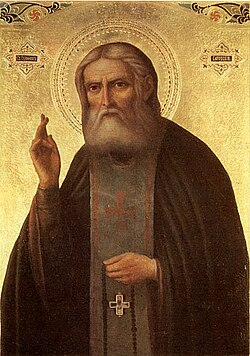

"Радость моя, Христос Воскресе!"
— преподобный Серафим Саровский
Добро пожаловать в храм преподобного Серафима Саровского — место молитвы, утешения и духовного возрождения
Наша история
Приход во имя святого преподобного Серафима Саровского Екатеринбургской епархии образован 6 февраля 1992 года по благословению архиепископа Екатеринбургского и Курганского
Мелхиседека. На основании постановления главы администрации п.
Бисерть от 20 января 1992 года о закрытии детских яслей двухэтажное
здание передано православному приходу для открытия молельного
дома. Первый настоятель прихода – иерей Анатолий Вычужанин, при
нём был освящен престол во имя святого преподобного Серафима
Саровского иерейским чином.
Архиепископом Екатеринбургским и Верхотурским Викентием в 2002 году
был освящен закладной камень на месте строительства будущего храма
по ул. Ленина, 45
В 2012 году начались работы по возведению деревянного храма. В конце
2014 года завершен монтаж сруба. В марте 2015 года состоялось
освящение и водружение креста на центральный купол, в апреле
– освящение и поднятие десяти колоколов. В течение 2015 года был
завершен монтаж кровли и водружены еще восемь крестов и куполов.
2018 году по благословлению митрополита Кирилла переход в новый
недостроенный храм.
В том же году митрополитом Кириллом заложен храм святителя
Николая, архиепископа Мир Ликийского, чудотворца, в 2021 году
митрополитом Евгением освящён.

Преподобный Серафим СаровскийИнформация
Престольные праздники: 1 августа – Прославление святого преподобного Серафима Саровского, 15 января – Преставление святого преподобного Серафима Саровского.
Святыни храма: Мощи святого преподобного Серафима Саровского, Мощи всех Дивеевских святых.
Приписные храмы / Приделы: Святителя Николая. архиепископа Мир Ликийского, чудотворца (пос. Первомайский, ул. Спортивная, д. 9а), Святого великомученика целителя Пантелеимона (Бисертская городская больница). Окормляемый храм. Храм в честь Казанской иконы Божией Матери, с. Киргишаны.
Жизнь прихода: Действует воскресная школа, при ней – кадетский казачий класс. Открыт вещевой склад, оказывается помощь вещами и продуктами малоимущим.
Расписание богослужений: Богослужения совершаются в субботу, воскресенье, праздничные дни. В воскресенье в 16:00 – молебен с чтением акафиста святому преподобному Серафиму Саровскому. Храм открыт ежедневно с 8:00 до 18:00.
Контакты
Настоятель храма: иерей Андрей Федореев
контактный телефон храма: +7 904 170 83 13